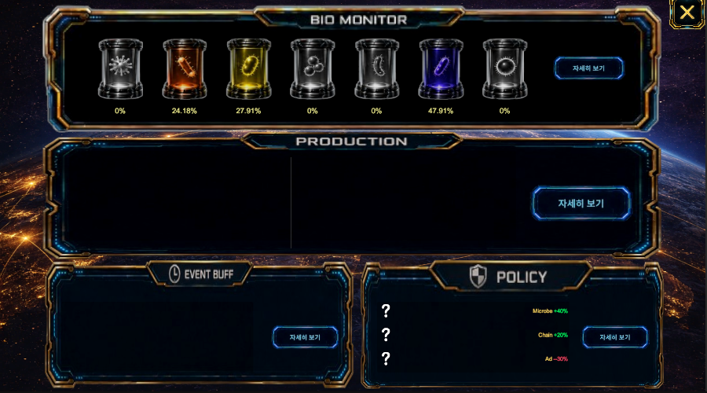

Sub System
바이오 코어

진입 경로
홈
→ 코어 시스템
→ 바이오 코어바이오 코어에서는 현재 미생물 분포, 생산 상태, 이벤트 버프, 사회정책 효과를 한 화면에서 확인한다.
기본 구성
바이오 코어 화면은 네 개의 영역으로 구성된다.
바이오 모니터
생산
이벤트 버프
정책바이오 모니터
현재 활성화된 미생물의 종류와 비율을 표시한다.
표시 정보
- 미생물 아이콘
- 미생물 종류
- 현재 비율
- 비활성 미생물
- 전체 미생물 분포
각 미생물 아래에는 현재 비율이 백분율로 표시된다.
미생물 종류
→ 현재 점유 비율
→ 전체 분포 변화`자세히 보기`를 누르면 미생물별 세부 정보와 변화 내역을 확인한다.
생산
현재 미생물 분포가 생산 시스템에 미치는 영향을 표시한다.
표시 정보
- 생산량 변화
- 생산속도 변화
- 생산체인 효과
- 영향을 받는 시설
- 영향을 받는 상품
`자세히 보기`를 누르면 농장, 공장, 상점 등 구역별 생산 영향을 확인한다.
이벤트 버프
현재 적용 중인 이벤트 효과를 표시한다.
표시 정보
- 이벤트 이름
- 적용 효과
- 증가 또는 감소 수치
- 적용 대상
- 남은 지속 시간
이벤트가 없으면 해당 영역은 비어 있는 상태로 표시된다.
`자세히 보기`를 누르면 현재 이벤트의 전체 효과와 적용 대상을 확인한다.
정책
현재 적용 중인 사회정책 효과를 표시한다.
표시 정보
- 생산체인 변화
- 미생물 영향 변화
- 광고효과 변화
- 피버효과 변화
- 기업 영향력 변화
예시:
생산체인 +50%
미생물 영향 +10%
광고효과 -25%`자세히 보기`를 누르면 적용 중인 정책과 전체 효과를 확인한다.
정보 갱신
바이오 코어의 수치는 미생물 분포, 이벤트, 정책, 생산 상태가 변할 때마다 갱신된다.
미생물 분포 변화
또는 이벤트·정책 적용
→ 생산 영향 계산
→ 바이오 코어 정보 갱신전체 흐름
바이오 코어 진입
→ 미생물 분포 확인
→ 생산 영향 확인
→ 이벤트 버프 확인
→ 정책 효과 확인
→ 필요한 항목 자세히 보기메뉴 설명
바이오 코어
현재 미생물 분포와 생산 상태를 확인합니다. 적용 중인 이벤트 버프와 사회정책이 생산, 미생물, 광고, 기업 영향력에 미치는 효과를 한 화면에서 볼 수 있습니다.